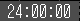
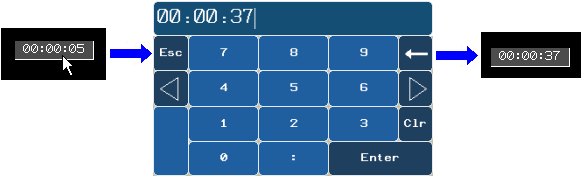

|
|
|
|
|
|
|
|
This section explains how to create a Time Toolchest part, so you can change the time.
Click the Toolchest icon  in the menu bar to open the Toolchest window, and click the DateTime folder.
in the menu bar to open the Toolchest window, and click the DateTime folder.
Select the Time Display you want, and then drag and drop it onto the panel.

You can choose from these Time Toolchest parts.
|
Part |
Description |
|
Time_Display_01 |
A time display with background color but without a border.  |
|
Time_Display_3D_01 |
A 3D time display with background color and 3D border. |
Right-click the Time Display part, and click Properties. The Time Display properties display in the Property Inspector.
Use the table below to define the properties for a time display.
|
Property |
Description |
|
Name |
The Time Display part's name. Whenever an object is created, a default name is generated. When renaming an object, its name must be unique within the target, must contain no more than 32 valid characters, and must follow the naming conventions. For details, see Appendix 9, Naming Conventions. |
|
Description |
Displays the name of the part. This property is read-only. |
|
Version |
This property is read-only. It displays the name of the part and the supporting Vijeo-Designer's version. |
|
Top |
The coordinates, in pixels, of the top-left corner of the object.
By changing these properties, the graphical object can be moved up, down, left, and right.
|
|
Left |
|
|
Width |
The width/height of the Time Display is in pixels. The minimum size for each Time Display is as follows:
|
|
Height |
|
|
Variable Type |
Select String or Separated Variable.
|
|
Time Format |
Select the time format for saving your time input at run time. |
|
Time Variable |
This property displays if you selected String as the variable type. Click |
|
Second Variable |
This property displays if you selected Separated Variable as the variable type and 24:00:00 as your time format. Click |
|
Minute Variable |
This property displays if you selected Separated Variable as the variable type. Click |
|
Hour Variable |
This property displays if you selected Separated Variable as the variable type. Click |
|
Text Color |
Select the text color for run time display. |
|
BgColor |
Select the background color for run time display. |
|
Font |
Select the font and font size for run time display. If the font type is 3D, the 3D text color is always black. |
|
Restore Defaults |
Click the |
|
Placeholder |
You can assign a placeholder in any property that requires a variable definition. Click the ellipsis to open the Placeholders dialog box and edit the variable placeholder for the object. The dialog box only displays if you had set up a placeholder for the object. For more information on placeholders, see Section 21.2.4, Working with Variable Placeholders. |

You cannot use system variables in Time Toolchest parts.
When you touch a time display part, a keypad displays so you can change the time.
